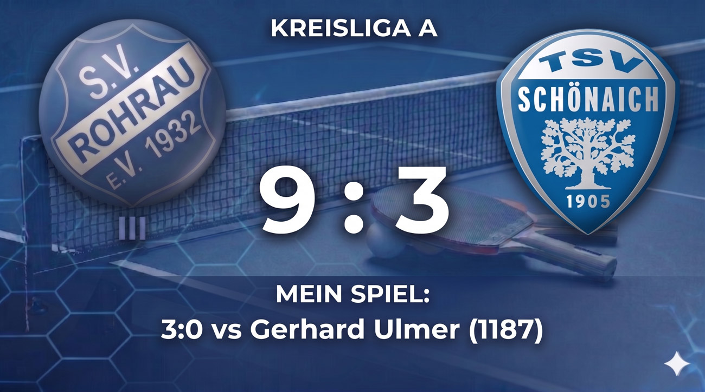
Etwas zu verlieren — mein erster Linkshänder
3:0 gegen Gerhard Ulmer (TTR 1187) — enger als es klingt, mit einem Taktikwechsel der alles drehte und dem Gefühl, erstmals erwartet zu werden.
SAISON 2025/26 · SV ROHRAU
TTR-Entwicklung
1213
+29 seit Saisonstart
Alle 18 Beiträge · neueste zuerst
Ein perfekter erster Satz (11:2), dann wieder Übermut — und ein zweites Spiel das unerwartet doch noch zählen hätte können. Die Lektion vor dem Pokalfinale.
Aufschlag als Waffe gegen Rajic, taktische Anpassung gegen Zarifian-Arnolds Kombination — und am Ende ein neuer persönlicher TTR-Höchststand.
Führung 4:0, dann Lob von außen gehört, die Gegnerin unterschätzt — und zu spät bemerkt dass sie Noppengummi spielt. Zweimal die gleiche Falle.
Zum ersten Mal gegen einen Linkshänder — und zum ersten Mal das Gefühl, von der Mannschaft erwartet zu werden. Coaching im zweiten Satz dreht alles.
136 Punkte Unterschied, die richtige Taktik und ein Timeout von Werner im entscheidenden Moment — der stärkste Sieg meiner bisherigen Karriere.
Zwei Niederlagen gegen Spieler die ich respektieren muss — und klare Erkenntnisse über fehlende Offensivvarianten.
Klarer Teamsieg in der Bezirksliga Senioren 40 — persönlich ein lehrreicher Abend über Aufschlagvarianten und taktische Anpassung.
Erster Einsatz in der Seniorenliga: Team verliert 5:7, ich gewinne beide Einzel — darunter einen 3:1-Sieg gegen TTR 1273.
Aufschlag, Offensive, Blocks — an diesem Abend hat alles zusammengespielt. Der erste klare Sieg nach einer langen Durststrecke.
Wieder Noppengummi, wieder verloren. Das Thema zieht sich durch die Saison — Zeit es anzugehen.
Übermut im zweiten Satz, Nerven im dritten, Geduld im vierten — und am Ende doch das bessere Ende für mich.
Zum ersten Mal trifft mich derselbe Gegner ein zweites Mal — ich bin ein anderer Spieler, aber es reicht noch nicht.
Sechs Runden Schweizer System, viele Erkenntnisse — und zu viele Niederlagen die ich hätte gewinnen können.
Zum ersten Mal habe ich ein Ligaspiel gewonnen und dabei wirklich das Gefühl gehabt, dass ich es in der Hand hatte.
Das erste Spiel habe ich unterschätzt, das zweite war ein echter Krimi — zwei Niederlagen und ein Minus auf dem Konto.
Mein Ziel war bescheiden: wenigstens ein Spiel gewinnen. Es wurden zwei — und sogar das Halbfinale.
Auswärts in Mötzingen — zwei Niederlagen, zwei verschiedene Lektionen, 33 TTR-Punkte weniger.
Mein erstes Ligaspiel überhaupt — gewonnen durch pure Geduld und ziemlich viel Aufregung.
Saison 2025/2026
Monatsbilanz TTR
18 Einträge

3:0 gegen Gerhard Ulmer (TTR 1187) — enger als es klingt, mit einem Taktikwechsel der alles drehte und dem Gefühl, erstmals erwartet zu werden.
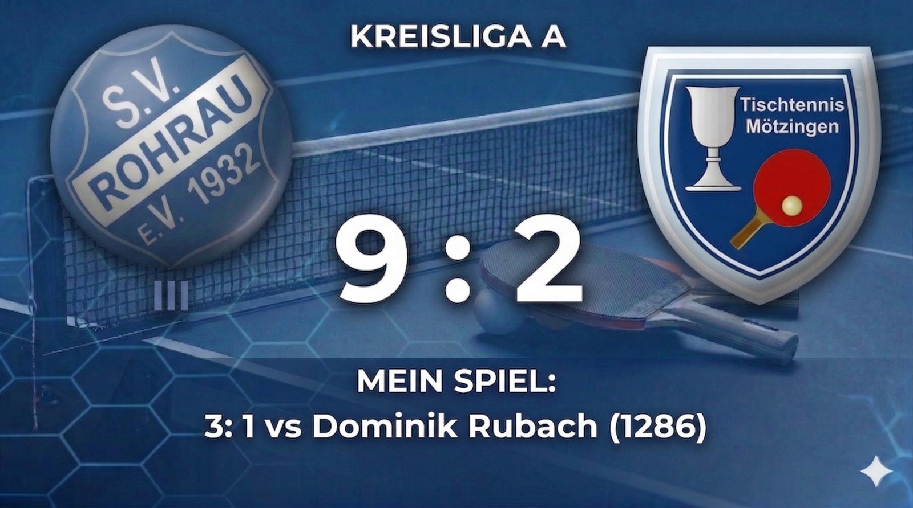
3:1 gegen Dominik Rubach (TTR 1286) — 136 Punkte Unterschied, die richtige Taktik, ein entscheidendes Timeout von Werner. Und der stärkste Sieg meiner bisherigen Karriere.
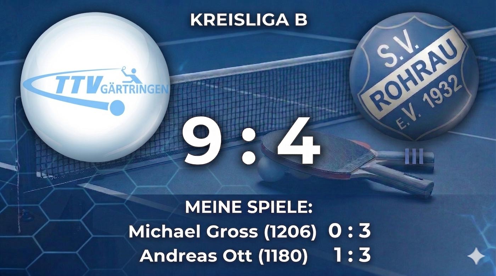
Ein 9:4 gegen den Lokalrivalen, zwei Niederlagen in meinen Einzel und klare Erkenntnisse: Mehr Offensivoptionen, mehr Sicherheit gegen Topspin.
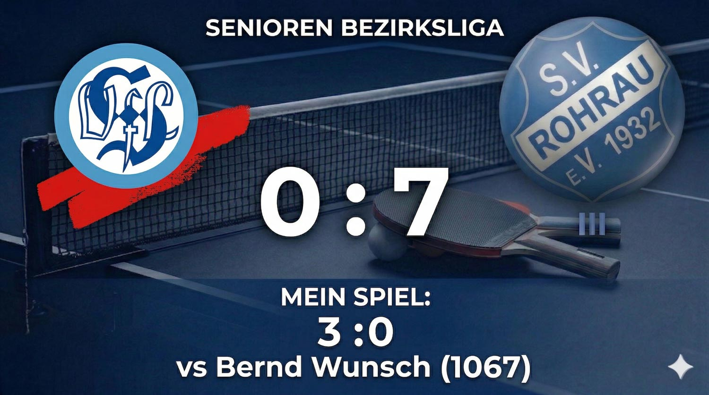
Klarer 7:0-Teamserfolg in der Bezirksliga Senioren 40 — persönlich ein lehrreicher Abend über Aufschlagvarianten und Anpassung im Spiel.
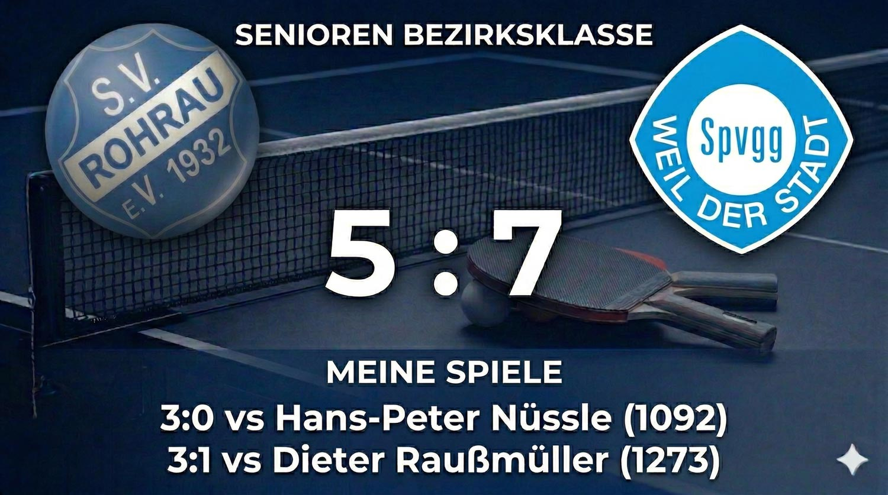
Erster Einsatz in der Seniorenliga: Team verliert 5:7, ich gewinne beide Einzel — darunter einen 3:1-Sieg gegen TTR 1273, meinen bislang wertvollsten.

Ein klarer 3:0-Sieg gegen Ivan Kuvsinov (TTR 1190) — Aufschlag, Offensive, Blocks, alles hat gepasst.
Weiterlesen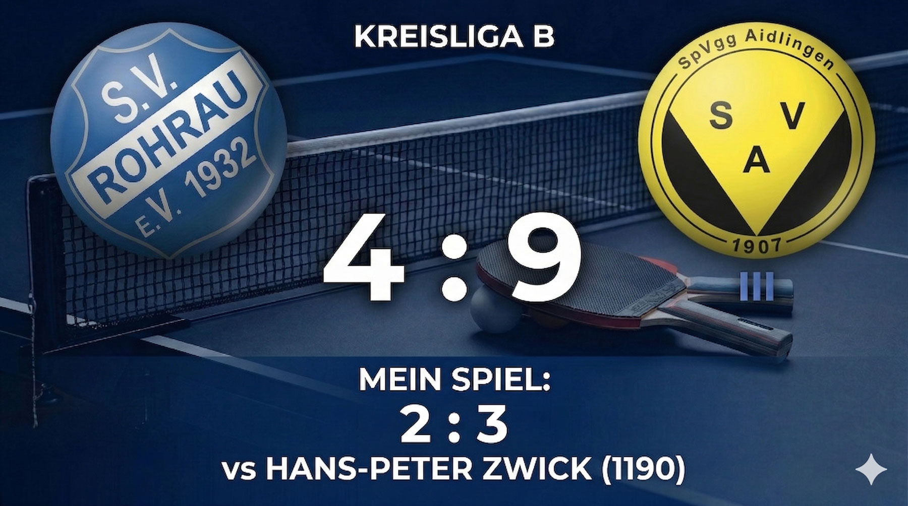
2:3 gegen Hans-Peter Zwick und sein Störspiel — wieder Noppen, wieder verloren. Das muss sich ändern.
Weiterlesen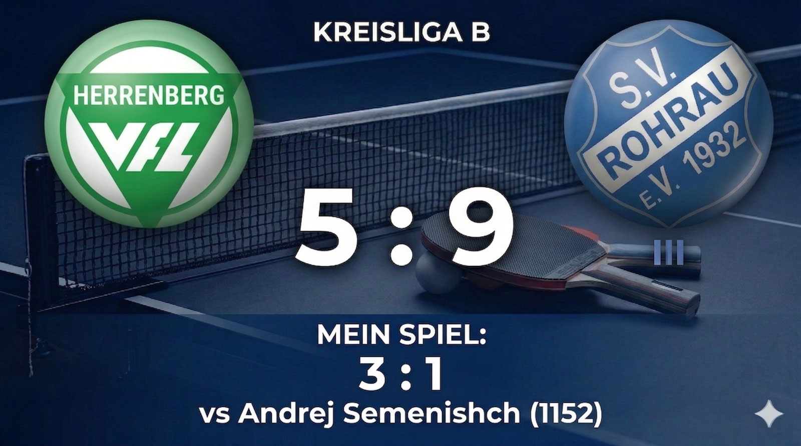
3:1 gegen Andrej Semenishch — Übermut, Nerven, Geduld und am Ende doch das bessere Ende für mich.
Weiterlesen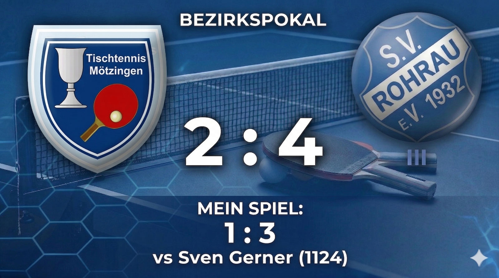
Zum ersten Mal trifft mich derselbe Gegner ein zweites Mal — und ich merke sofort, dass ich ein anderer Spieler geworden bin.
Weiterlesen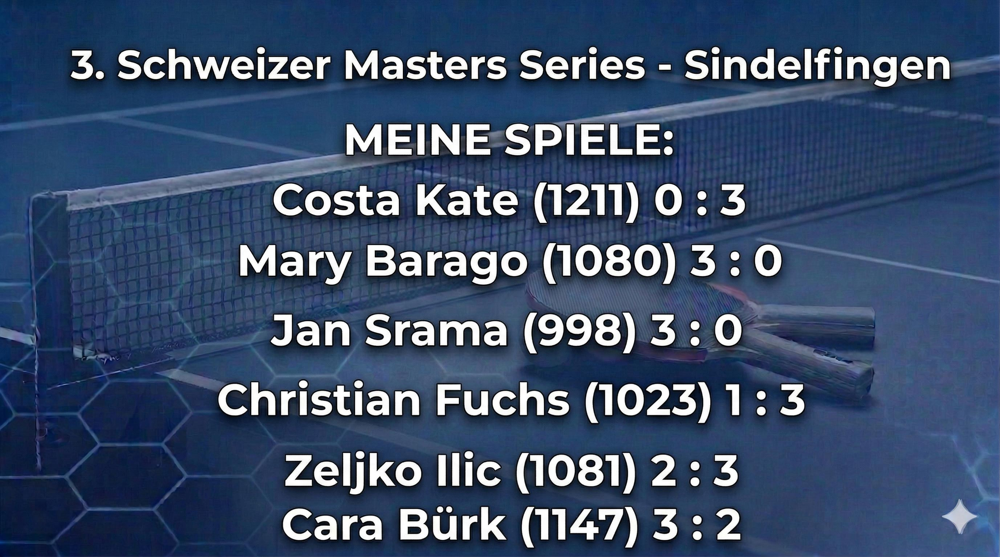
Sechs Runden Schweizer System, drei Siege, drei Niederlagen — und zu viele lösbare Niederlagen. Ein lehrreicher Tag.
Weiterlesen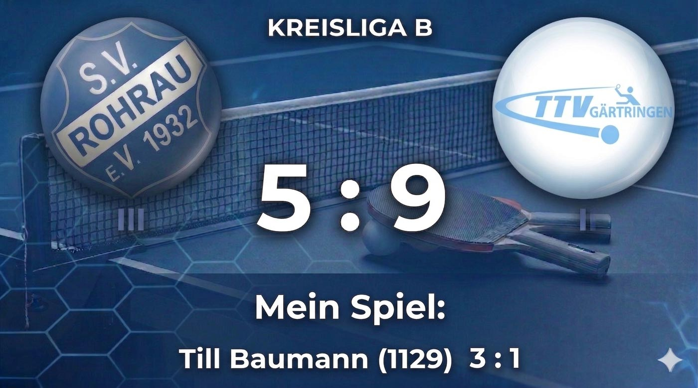
3:1 gegen Till Baumann — zum ersten Mal habe ich ein Ligaspiel gewonnen und dabei wirklich das Gefühl gehabt, dass ich es in der Hand hatte.
Weiterlesen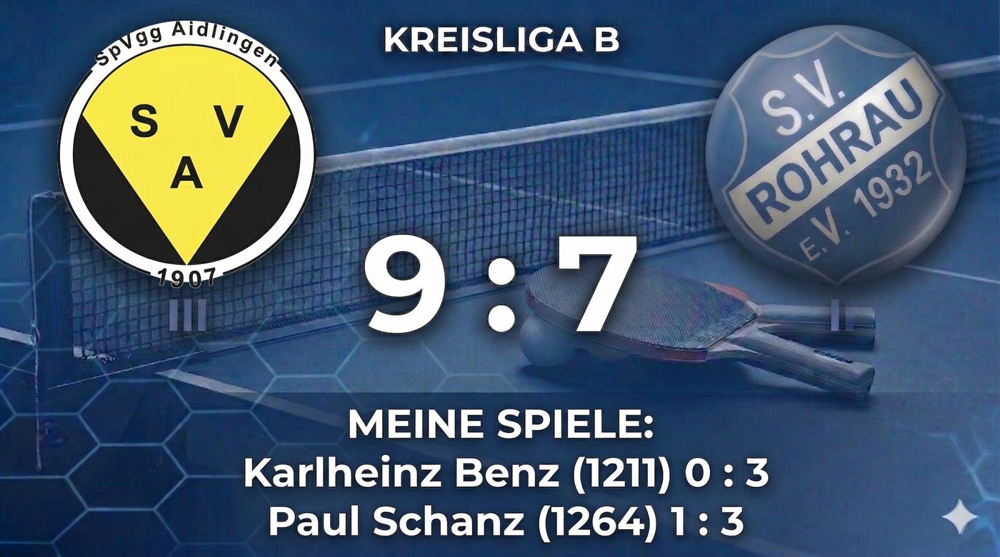
KLB E-Erwachsene — TT Deufringen-Aidlingen IV : SV Rohrau III
Das erste Spiel habe ich unterschätzt, das zweite war ein echter Krimi — zwei Niederlagen und −11 TTR.
Weiterlesen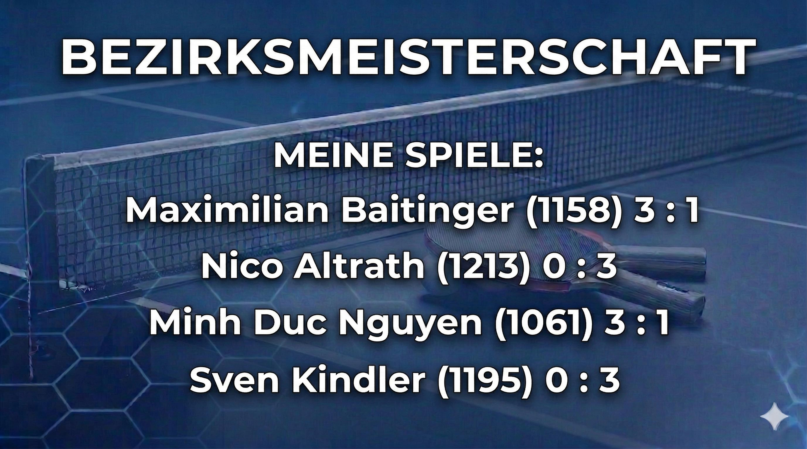
Bezirksmeisterschaften Böblingen — Klasse D
Mein Ziel war bescheiden: wenigstens ein Spiel gewinnen. Es wurden zwei — und sogar das Halbfinale.
Weiterlesen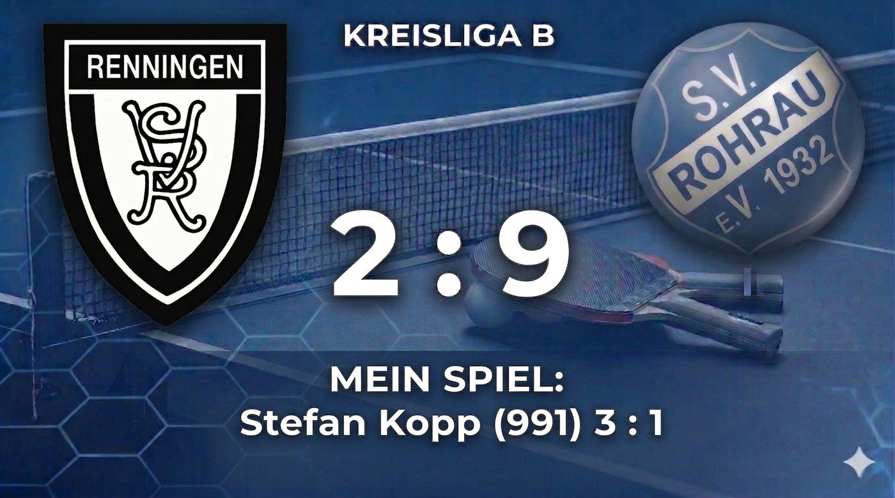
KLB E-Erwachsene — TT Mötzingen III : SV Rohrau III
Auswärts in Mötzingen — zwei Niederlagen, zwei verschiedene Lektionen.
Weiterlesen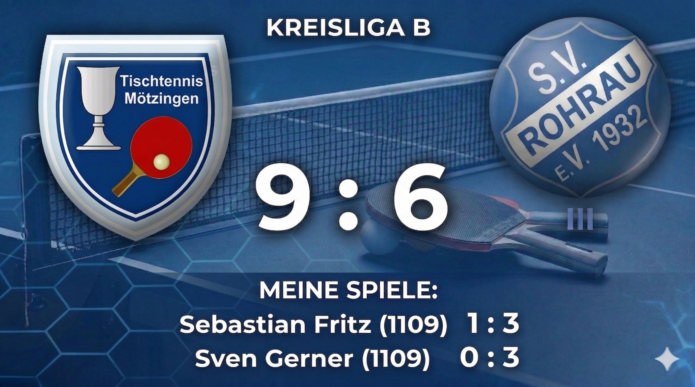
KLB E-Erwachsene — TT Renningen-Malmsheim IV : SV Rohrau III
Mein erstes Ligaspiel überhaupt — gewonnen durch pure Geduld und ziemlich viel Aufregung.
WeiterlesenAuswärtsspiel in Mötzingen, 10 Uhr morgens. Zwei Einzel, beide verloren. Aber kein schlechter Tag zum Nachdenken.
Den ersten Satz habe ich noch gewonnen, 11:9 — und das Gefühl war gut. Ich hatte Sebastian im Griff, er kam nicht wirklich ins Spiel. Dann der zweite Satz: 10:12. Knapp, ärgerlich, aber eigentlich kein Grund zur Panik.
Genau da habe ich den Fehler gemacht. Statt ruhig zu bleiben, habe ich angefangen zu hasten. Und Sebastian hatte auf der Rückhand einen Noppenbelag — jeder Ball kam anders zurück als erwartet. Dritter Satz 6:11, vierter 6:11.
Svens Vorhand-Topspin war an dem Tag einfach zu stark. Er spielte die Bälle tief und schnell, und ich hatte keine Antwort. 3:11, 8:11, 9:11. Ich war zu passiv, zu weit vom Tisch.
Der TTR hat es gnadenlos quittiert: von 1185 auf 1148 — minus 37 Punkte an einem einzigen Spieltag.
Erster Wettkampftag. 18 Uhr, Turnhalle, Aufstellung kommt raus: Position 6. Klar — da ist man als Neuling realistischerweise eingeteilt, aber das hat die Aufregung kein bisschen gedämpft. Im Gegenteil. Ich war nervöser als bei allem, was ich vorher im Training erlebt hatte.
Mein Gegner: Stefan Kopp, TTR 991. Auf dem Papier sollte das machbar sein. Im Kopf war davon wenig zu spüren.
Was dann passiert ist, hat mich selbst überrascht: Ich habe keinen einzigen gezielten Angriff gespielt. Kein Topspin, kein Schuss. Einfach halten, zurückschicken, warten. Irgendwie hat Stefan mehr Fehler gemacht als ich — und das hat gereicht. Erster Satz 11:6, dann kurz den Faden verloren mit 9:11, aber danach wieder ruhig geblieben: 11:8 und 11:9.
3:1 — gewonnen. Ich stand danach am Tisch und dachte ehrlich gesagt: War das wirklich so einfach? Natürlich war es das nicht. Aber in dem Moment hat sich dieser kleine Defensivsieg riesengroß angefühlt. Ein guter erster Abend.
Auswärts in Deufringen, 18 Uhr. Zwei Einzel, beide verloren. Aber diesmal mit zwei sehr unterschiedlichen Geschichten.
Ich muss ehrlich sein: Ich bin in dieses Spiel gegangen mit dem stillen Gedanken, dass ich es gewinnen würde. Karlheinz ist älter, schaut auf den ersten Blick nicht besonders gefährlich aus — und genau das war mein Fehler.
Sein Vorhand-Topspin war anders als alles, was ich bisher erlebt hatte. Nicht schnell, aber mit einer unglaublichen Menge Spin. Jeder Ball, den ich blocken wollte, ist mir hinten rausgeflogen. 9:11, 9:11, 5:11 — Karlheinz hat das alles mit der Ruhe eines Spielers gemacht, der einfach weiß was er tut. Ein erfahrener Spieler hat einen Neuling mit viel Spin und noch mehr Routine auseinander genommen.
Das letzte Einzel des Abends — und ein richtiger Krimi. Die Mannschaftsbegegnung hing in der Luft, der Tisch war von Zuschauern umringt. Paul hat das Spiel dominiert, aber ich habe mich nicht aufgegeben. Ich habe versucht, ihn zu Fehlern zu zwingen, geduldig zu bleiben. Den dritten Satz habe ich tatsächlich gewonnen, 11:9. Aber Paul war insgesamt die bessere Version: 5:11, 7:11, 9:11 nach meinem Satz, 7:11.
Verloren — aber das war ein gutes Spiel. Eines, das ich nicht bereue.
−11 TTR-Punkte, TTR jetzt bei 1141. Das erste Spiel: selbstverschuldet durch Unterschätzung. Das zweite: verloren gegen einen stärkeren Spieler, aber mit Haltung.
Nach Mötzingen war meine Selbstsicherheit ziemlich angekratzt. Zwei Niederlagen gegen schwächere Spieler, 37 TTR-Punkte weg, und plötzlich keine Ahnung mehr, wo ich überhaupt stehe. Mein Ziel für die Bezirksmeisterschaft war deshalb bewusst klein: mindestens ein Spiel gewinnen.
Maximilian ist jung, technisch stark, mit einer wirklich guten Vorhand. Schon im ersten Satz war klar, dass er mehr Schläge drauf hat als ich — 6:11. Aber dann habe ich aufgehört, sein Tempo mitzumachen. Kein Gegenangriff, kein Topspin-Duell — einfach halten, zurückschicken, Geduld. Drei Sätze, 11:9, 11:8, 11:9 — Sieg. Gefühlt war er der bessere Spieler. Aber ich habe weniger Fehler gemacht.
Nico ist Noppenspieler — und ich hatte es von der ersten Sekunde an schwer. Die Schnittumkehr hat mich wieder erwischt: Bälle, die ich mit Unterschnitt schicke, kommen mit Topspin zurück. Immer wieder sind mir die Bälle unkontrolliert nach oben gesprungen, genau dahin wo Nico sie haben wollte. 5:11, 6:11, 9:11. Das Thema Noppen ist ein echter Schwachpunkt.
Ähnliches Duell wie im ersten Spiel. Erster Satz 14:12, absolut zäh, danach 12:14 — aber diesmal bin ich ruhig geblieben. Dritter und vierter Satz: 11:5, 11:6. Zwei Siege bedeuteten: Halbfinale.
Sven ist erfahren und offensiv stark. Ich habe versucht, ihn in Unterschnitt-Rallys zu halten — das hat eine Weile funktioniert. Aber Sven ist gut genug, um aus diesen Rallys heraus anzugreifen. 8:11, 7:11, 6:11. Kein Vorwurf: Sven war an dem Tag schlicht eine Nummer zu gut.
2 Siege, 2 Niederlagen, +4 TTR-Punkte. Ein Turnier, das Spaß gemacht hat — und das erste Mal, dass ich das Wort "Halbfinale" in Verbindung mit meinem eigenen Namen schreiben kann.
Es gibt Siege, nach denen man einfach froh ist, dass es vorbei ist. Und es gibt Siege, die sich anders anfühlen. Der hier war anders.
30. November, Heimspiel gegen TTV Gärtringen V. Mein Gegner: Till Baumann, TTR 1129. Auf dem Papier ein ausgeglichenes Duell — aber von der ersten Sekunde an hatte ich das Gefühl, dass heute mein Tag ist.
Was mich in diesem Spiel am meisten überrascht hat, war wie sehr Till mit meinem Aufschlag kämpfte. Ich habe in letzter Zeit viel daran gearbeitet — Variation, Länge, Schnitt — und zum ersten Mal hat sich das so deutlich im Spielverlauf gezeigt. Till hat immer wieder kurze, hohe Rückgaben gespielt, die ich direkt angreifen konnte. Das war ein Geschenk.
Erster Satz: 11:7. Klar, kontrolliert. Kein Glückssieg — ich habe gewusst, warum ich gewonnen habe.
Der zweite Satz war der stärkste des Abends: 11:5. Ich habe Tills Angriffe früh gelesen und gut kontert, meine eigenen Offensivaktionen haben gepasst. Es war das erste Mal, dass ich in einem Ligaspiel das Gefühl hatte: Ich bestimme hier das Tempo.
Dann der dritte Satz — 7:11. Till hat sich gefangen, ruhiger gespielt, weniger Risiko genommen. Ich habe zu viele leichte Fehler gemacht und den Rhythmus verloren. Gut so, eigentlich: Es war eine Erinnerung daran, dass man konzentriert bleiben muss.
4. Satz, 11:9. Kein einfaches Ende, aber ein verdienter. Es stand ein paarmal eng, aber ich bin ruhig geblieben — genau das, was mir in Mötzingen und Deufringen noch gefehlt hat. Den Matchball habe ich mit einem platzierten Vorhand-Angriff abgeschlossen.
3:1 — Sieg.
Die letzten Wochen waren frustrierend. Mötzingen: −37 TTR. Deufringen: −11 TTR. Ich habe an mir gezweifelt, ob das Niveau in der Liga für mich überhaupt stimmig ist.
Heute war die Antwort: Ja, es stimmt. Ich gehöre dazu. Ich muss nur spielen, wie ich trainiere.
Das ist das Gefühl, auf das ich gewartet habe.
Frühmorgens Tischtennis an einem Samstag im Dezember. 10 Uhr, Sindelfingen, Schweizer System — sechs Runden gegen sechs verschiedene Spieler. Ich bin mit gemischten Gefühlen gefahren: ein bisschen erkältet, nicht gut geschlafen, aber den Turniertag wollte ich nicht auslassen.
Am Ende stand es 3:3. Kein gutes Ergebnis auf dem Papier, −26 TTR-Punkte, neuer Stand: 1126. Und doch war es ein lehrreicher Tag — vor allem, weil die Niederlagen nicht einfach passiert sind. Sie hatten alle Namen und Gesichter.
Das erste Spiel, halb zehn Uhr morgens, und ich war noch nicht wirklich da. Costa spielt mit Noppen — und das ist nach wie vor mein Kryptonit. Ich habe bisher gegen keinen einzigen Noppenspieler gewonnen. Costa war dabei noch der Erfahrene, der genau wusste, wie er das nutzt. 8:11, 5:11, 7:11. Ich hatte keine Chance.
Das Noppen-Problem ist real und ich muss anfangen, es gezielt zu trainieren.
Ein deutlicher Sieg. Mary war in diesem Turnier einfach nicht auf meinem Niveau — ich habe konzentriert gespielt, meine Aufschläge liefen gut, und es gab wenig zu analysieren. 11:4, 11:4, 11:2.
Ähnliches Bild wie gegen Mary, aber mit einem entscheidenden Detail: Jan hat kaum einen Aufschlag von mir zurückgebracht. Das war der Schlüssel. 11:3, 11:5, 11:6 — sauber.
Das bitterste Spiel des Tages. Christian ist auf dem Papier deutlich schwächer als ich — und trotzdem habe ich verloren. Seine Vorhand-Topspins waren an diesem Tag gut, und ich habe in den entscheidenden Momenten zu viele davon nicht zurückgebracht. 10:12, 9:11 — beide Sätze knapp verloren. Den dritten hatte ich noch mit 11:5, aber dann: 9:11 im vierten.
Dieses Spiel hätte ich gewinnen sollen. Es war kein Leistungsunterschied — es war ein Kopf- und Konditionsunterschied.
Ein ausgeglichenes, vorsichtiges Spiel gegen einen erfahrenen Spieler. Wir haben beide nicht viel riskiert — lange Rallyes, wenig Offensivaktionen. Mein Aufschlag hat Zeljko diesmal keine Probleme bereitet. In den entscheidenden Phasen hat er einfach weniger Fehler gemacht. 12:10 gewonnen, dann 8:11, 11:6, 11:13, 10:12 verloren.
Der letzte Gegner des Tages — noch einmal ein Fünfsatz-Krimi. Mit meinem Aufschlag hatte ich in den ersten beiden Sätzen klare Vorteile: 11:9, 11:5. Ab dem dritten Satz hat Cara sich darauf eingestellt. Satz drei und vier gingen verloren: 6:11, 5:11. Fünfter Satz — ich habe mich noch einmal zusammengerissen: 11:8. Ein Sieg zum Abschluss.
3:3, −26 TTR. Ich bin nicht zufrieden — aber nicht enttäuscht. Die Niederlagen gegen Christian und Zeljko waren lösbar. Ich hätte 5:1 spielen können. Was ich mitnehme: In engen Spielen fehlt mir noch die Kaltblütigkeit. Und Noppenspieler bleiben ein echtes Problem. Aber mein Aufschlag funktioniert weiterhin als Waffe — das war heute der rote Faden.
Mötzingen, 19:30 Uhr. Auswärtsspiel, KL-B, Ligabetrieb. Und im Aufstellungszettel: Sven Gerner, TTR 1124.
Ich kenne diesen Namen. Im November war es das zweite Spiel meines ersten Auswärtstages in Mötzingen — und ich war chancenlos. 0:3, kein Satz, kaum ein Punkt. Heute, knapp drei Monate später, trifft es mich wieder.
Es ist das erste Mal in meiner kurzen Ligakarriere, dass ich gegen denselben Gegner ein zweites Mal antrete. Und ich merke schon beim Einspielen: Es fühlt sich anders an. Nicht nervöser — sondern wacher. Ich weiß was kommt. Ich habe eine Erwartung, einen Plan.
Der erste Satz ist lang und eng. Ich halte mit, kämpfe jeden Punkt — und verliere ihn trotzdem, 12:14. Kein Einbruch, kein Totalausfall, einfach knapp. Das allein ist schon ein Fortschritt gegenüber November.
Im zweiten Satz läuft es nicht mehr so gut: 6:11. Ich finde keinen Rhythmus, Svens Vorhand-Topspin macht mir erneut Probleme. Jeder Angriff von ihm, den ich nicht aktiv umleite, landet irgendwo unten.
Dritter Satz — den gewinne ich, 11:9. Ich bleibe ruhig, spiele wenig Fehler, warte auf seine Chancen. Es funktioniert.
Vierter Satz: 10:12. Wieder knapp, wieder auf der falschen Seite. Das Spiel endet 1:3.
Im November war ich hilflos. Heute war es ein offenes Spiel. Ich habe einen Satz gewonnen, ich habe den ersten Satz bis 12:14 mitgespielt. Das zählt.
Trotzdem bleiben zwei Probleme unübersehbar: Erstens die Topspin-Abwehr — wenn Sven seine Vorhand öffnet, fehlt mir die Antwort. Ich blocke zu passiv, stehe oft zu weit hinten. Zweitens fehlt mir das offensive Spiel. Ich spiele solide, wenig unforced errors — aber ich warte zu oft auf den Fehler des Gegners statt selbst Druck aufzubauen. Gegen Spieler auf Svens Niveau reicht das nicht.
Das Spiel hätte anders ausgehen können. Der erste Satz war ein Münzwurf, der vierte auch. Wenn ich diese engen Momente besser nutze, steht es 3:1 für mich.
Ich freue mich auf das nächste Mal. Dann bin ich soweit.
Herrenberg, 18 Uhr, Auswärtsspiel. Andrej Semenishch, TTR 1152 — etwas stärker als ich auf dem Papier. Vier Sätze, vier völlig verschiedene Geschichten.
11:5. Der erste Satz läuft wie aus einem Guss. Mein Aufschlag funktioniert, meine Rückgaben sitzen, ich lese Andrejs Spiel von Anfang an richtig. Nach ein paar Minuten habe ich das Gefühl: Das wird heute mein Tag. Ich fühle mich wie der Sieger — noch bevor das Spiel entschieden ist. Genau das wird mein Problem.
8:11. Ich verliere die Konzentration. Zu sicher, zu offensiv, zu experimentierfreudig. Ich probiere Dinge, die ich im Training kaum mache — und bekomme die Quittung. Andrej ist nicht schlechter geworden. Ich bin schlechter geworden. Ein bekanntes Muster, eine notwendige Erinnerung: Ein Satz ist kein Spiel.
14:12. Dieser Satz ist ein Krimi. Eng von Anfang an, kein klarer Vorteil, jeder Punkt kämpft sich. Ich spüre echten Druck — nicht die aufgeregte Nervosität vom Anfang, sondern den ruhigen Druck eines engen Spiels. Ich gewinne ihn, weil ich aufhöre, Fehler zu machen — und auf Andrejs warte. Geduld statt Angriff. 14:12.
11:9. Der letzte Satz ist kein schöner Satz. Beide spielen defensiv, beide schieben, beide warten. Kein Topspin-Feuerwerk — einfach solides Halten und auf den Fehler des anderen hoffen. Zum Glück ist der Fehler auf Andrejs Seite.
3:1 — Sieg.
+13 TTR, neuer Stand 1129. Ich habe einen Spieler geschlagen, der auf dem Papier stärker war. Das zählt. Aber ehrlich war es kein überzeugender Sieg — Satz 2 war geschenkt, unnötig verloren durch Überheblichkeit. Was ich heute gelernt habe: Konzentration ist keine Konstante. Sie muss aktiv gehalten werden, auch wenn alles läuft. Besonders dann.
14. Februar. Heimspiel. Auf dem Papier sollte das machbar sein — Hans-Peter Zwick, TTR 1177, kein klassischer Angreifer, kein schnelles Spiel. Langsam, kontrolliert, kein offensives Risiko. Sein Werkzeug: Noppen-Störspiel.
Am Ende steht 2:3. Mein größter Rückschlag in dieser Saison.
Ich kenne das Muster inzwischen. Costa Kate im Dezember, Sebastian Fritz im November — jedes Mal Noppen, jedes Mal Niederlage. Heute war Hans-Peter der Nächste. Dabei hätte ich es wissen müssen. Hätte vorbereitet sein müssen. War ich aber nicht.
Der erste Satz: 10:12. Die Bälle kommen anders zurück als erwartet — mal mit Unterschnitt, mal ohne, mal mit seitlichem Spin. Ich treffe meine Rückgaben nicht. Ich versuche sauber zu spielen. Das klappt nicht.
Satz zwei gewinne ich — 11:9. Ich gehe geduldiger ran, versuche weniger zu denken. Es funktioniert für einen Satz. Dann bricht es wieder ein: 8:11. Hans-Peter braucht nichts zu tun außer zurückschicken — und meine Fehler häufen sich. Vierter Satz, 11:8 — ich kämpfe mich zurück.
7:11. Es ist der frustrierendste Satz, den ich bisher gespielt habe. Im entscheidenden Moment versuche ich den Ball nur noch rüberzubringen. Kein Angriff, kein Plan, kein Mut. Einfach: bloß keinen Fehler machen.
Das klappt noch nicht mal.
Ich war so passiv, dass ich mich selbst aus dem Spiel genommen habe. Hans-Peter hat das nicht erzwungen — ich habe es ihm geschenkt.
Ich kann das Noppen-Problem nicht länger ignorieren. Es begegnet mir regelmäßig, und ich verliere jedes Mal. Das ist keine Pechsträhne. Das ist eine echte Schwäche.
Was mir fehlt: ein Plan für Noppenspieler. Mehr Druck nach vorne, kürzere Bälle, konsequentere Aufschläge — und der Mut, offensiv zu bleiben, auch wenn die Bälle seltsam zurückkommen. Passivität gegen Störspieler ist keine Strategie.
−6 TTR, Stand jetzt 1123. Kein katastrophaler Einbruch auf dem Papier. Aber dieser Verlust sitzt tiefer als die Zahl vermuten lässt.
Sechs Tage nach der Niederlage gegen Hans-Peter Zwick. Auswärtsspiel in Schönbuch, 19 Uhr, Ivan Kuvsinov — TTR 1190. Auf dem Papier der stärkste Gegner, den ich in dieser Saison je geschlagen habe.
Am Ende: 3:0. Ich habe ihn nicht mal einen Satz gewinnen lassen.
Der erste Satz ist eng — 12:10. Aber er fühlt sich nicht eng an. Ich bin drin, ich bin fokussiert, meine Aufschläge funktionieren von der ersten Minute an. Ivan findet keine Antwort darauf, schickt mir kurze, hohe Rückgaben — genau das, womit ich gerne arbeite.
Zweiter und dritter Satz: 11:6, 11:6. Klarer geht es kaum. Meine Offensivaktionen greifen, die Blocks sitzen, ich mache kaum unforced errors. Es ist das Spiel, das ich mir vorstelle wenn alles stimmt — und heute stimmt alles.
Der Aufschlag hat heute wirklich Wirkung gezeigt — Ivan hatte regelmäßig Probleme damit, und das hat den ersten Angriff erleichtert. Die Offensive hat gepasst: kein Herumstochern, keine Überlegerei — gesehen, angegriffen, Punkt gemacht. Und zum ersten Mal in dieser Saison haben meine Blocks richtig funktioniert. Wenn Ivan mal angriff, habe ich den Ball kontrolliert zurückgebracht statt ins Netz.
Ich hatte nach der Niederlage letzte Woche keine großen Erwartungen. Vielleicht hat das geholfen — kein Druck, kein Plan, einfach spielen.
+15 TTR, neuer Stand 1138. Erstmals seit Dezember wieder deutlich nach oben. Ich weiß nicht ob ich Ivan nochmal so klar schlagen würde. Aber ich weiß jetzt: Wenn Aufschlag, Offensive und Blocks zusammenspielen, kann ich auf diesem Niveau bestehen. Das ist das Wichtigste.
Erster Einsatz in der Seniorenliga. Ein anderes Niveau, ein anderer Druck — und am Ende ein bitteres 5:7 für Rohrau II, das sich aber deutlich enger angefühlt hat, als es das Ergebnis vermuten lässt.
Im vorderen Paarkreuz hatten die Weil der Städter klar die Nase vorn — dort haben sie sämtliche Punkte geholt und damit früh den Ton gesetzt. Wir haben in der Mitte und hinten gut gehalten, sodass es bis zum letzten Doppel noch möglich war, auf 6:6 zu kommen. Basti und ich hätten das gebraucht. Wir hatten unsere Momente, aber das erste Doppel aus Weil der Stadt war einfach zu stark — clever aufgestellt, druckvoll im Spiel. So blieb es beim 5:7.
Schade, aber das ist Mannschaftstischtennis: Wenn der vordere Paarkreuz schwächelt, müssen die anderen mehr als 100 % liefern, und auch das reicht manchmal nicht.
Mein erstes Einzel gegen Hans-Peter Nüssle (TTR 1092) war kein Selbstläufer. Es war eng, Satz für Satz — 11:8, 11:7, 11:6. Aber ich war von der ersten Minute an konzentriert, habe kaum freie Fehler gemacht und ihn nie aus dem Spiel gelassen. Das 3:0 klingt klarer als es sich anfühlte.
Im zweiten Einzel wartete Dieter Raußmüller (TTR 1273) — mit Abstand der bisher stärkste Gegner, den ich je bezwungen habe. Dieter ist ein echter Offensivspieler, hat einige wirklich starke Angriffe gezeigt und mich mehrfach unter Druck gesetzt. Ich habe mich aber auf meine Defensive verlassen — ruhig, kontrolliert, kaum Fehler. Wenn er angriff, war der Ball zurück; wenn ich die Chance sah, habe ich selbst angegriffen.
3:1 (11:13, 11:7, 11:8, 11:5). Den ersten Satz habe ich noch verloren, dann aber das Spiel gedreht. Ein Ergebnis, über das ich mich noch lange freuen werde.
Als Mannschaft haben wir verloren — das tut weh, besonders weil das 5:7 vermeidbar war. Persönlich war es aber ein außergewöhnlicher Abend: zwei Siege, darunter der wertvollste meiner bisherigen Laufbahn. Wenn ich so spiele, bin ich in dieser Liga angekommen. So kann es weitergehen.
Zwei Tage nach dem Debut in der Seniorenliga — und gleich der nächste Einsatz, diesmal für unsere erste Seniorenmannschaft in der Bezirksliga Senioren 40. Auswärts in Sindelfingen, 20 Uhr.
Wir waren auf allen Positionen klar besser aufgestellt und haben das auch auf den Tisch gebracht: 7:0, alle sieben Spiele gewonnen. Einer dieser Abende, an denen es einfach läuft — die Einzelpunkte kommen, das Doppel sitzt, und die Mannschaft zieht in eine Richtung. Kein Drama, kein Zittern, klarer Sieg.
Interessant war mein Weg zu dem Sieg gegen Bernd Wunsch (TTR 1067). Im Doppel hatte ich bereits mit ihm zu tun bekommen — und dort war sein Aufschlag mein größtes Problem. Ich konnte damit überhaupt nicht umgehen, war ständig in der Defensive und völlig unvorbereitet für sein Spiel.
Im Einzel lief es dann überraschend besser. Bernd setzte komischerweise nicht dieselben Aufschläge ein, die mir im Doppel so Probleme gemacht hatten. Dadurch konnte ich freier spielen, kam in meinen Rhythmus — und war jenseits der Aufschläge insgesamt solider. 3:0 (11:8, 11:7, 11:4), ein klarer Sieg.
Der Abend hat mich aber auch etwas gelehrt: Ich muss besser darin werden, mich auf ungewohnte Aufschläge schnell einzustellen. Im Doppel war ich komplett hilflos — das darf nicht sein. Wenn Bernd im Einzel dieselben Aufschläge eingesetzt hätte, wäre es eng geworden. Gut, dass er es nicht tat. Beim nächsten Mal darf ich mich darauf nicht verlassen.
Derby-Tag. TTV Gärtringen V gegen SV Rohrau III — und am Ende eine deutliche 9:4-Niederlage, die sich nicht besser anfühlte, als sie klingt.
Im vorderen Paarkreuz waren wir klar unterlegen — die Gärtringer haben dort sauber gespielt und uns keine Chance gelassen. In der Mitte und hinten haben wir versucht gegenzuhalten, aber der frühe Rückstand war zu groß, um ihn noch aufzuholen. Am Ende stand ein verdienter 9:4-Sieg für Gärtringen.
Ich spielte heute erstmals im mittleren Paarkreuz — neu für mich in der Kreisliga B. Im Doppel war ich an der Seite von Horst, wir spielten gegen das erste Doppel der Gärtringer. Es gab nichts zu holen: 0:3, klare Niederlage. Der Gegner war deutlich besser, wir hatten zu wenig Antworten auf ihr Spiel.
Michael Gross (TTR 1206) hat mich im Grunde komplett auseinander genommen — 0:3 (6:11, 9:11, 9:11). Ich habe das Spiel von Anfang an verschlafen. Michael hat meine Angriffe konsequent gekontert und mich damit eingeschüchtert. Ich habe immer weniger offensive Aktionen gewagt, wurde berechenbarer — und er hat das gnadenlos ausgenutzt. Sein Vorhand-Topspin ist stark, und ich hatte keine Antwort darauf.
Am Ende habe ich fast nur noch auf seine Rückhand gespielt, weil mir nichts anderes einfiel. Das war falsch. Verdiente Niederlage.
Gegen Andreas Ott (TTR 1180) war es im Grunde eine Wiederholung. 1:3 (11:7, 8:11, 6:11, 8:11) — ich habe den ersten Satz gewonnen, danach aber nachgelassen. Andreas hatte zwar etwas mehr Probleme mit meinen Aufschlägen, aber insgesamt konnte ich zu wenig Druck aufbauen. Die gleiche Geschichte: starker gegnerischer Topspin, fehlende Offensivoptionen auf meiner Seite.
Dieser Tag hat mir klar gezeigt: Ich brauche mehr offensive Varianten, um Gegner auf diesem Niveau dauerhaft beschäftigen zu können. Und ich muss sicherer im Umgang mit starkem Topspin werden — sowohl in der Defensive als auch beim eigenen Kontertor. Wenn beides fehlt, bin ich zu leicht zu lesen.
Das war ein gebrauchter Tag. Aber manchmal braucht es genau solche Spiele, damit man weiß, woran man arbeiten muss.
Erstes Mal aushelfen bei der SV Rohrau II in der Kreisliga A Süd. Gegner: Tischtennis Mötzingen II. Am Ende steht ein souveränes 9:2 für uns — und für mich persönlich der stärkste Sieg meiner bisherigen Karriere.
Es war von Anfang an klar, dass wir das bessere Team auf dem Feld hatten. Schon die Doppel verliefen gut: Alle drei gingen an uns, damit stand es 3:0 — noch bevor ein einziges Einzel gespielt war. Unsere Mannschaft hat von Position zu Position abgeliefert, und die 9:2 am Ende spiegeln wider, wie das Spiel war: kontrolliert, konzentriert, verdient.
Im dritten Doppel spielte ich mit Werner zusammen. Auf dem Papier war das keine einfache Aufgabe: Ich hatte die wenigsten TTR-Punkte am Tisch, Werner ging mit Knieproblemen ins Spiel. Niemand hätte sicher auf uns gesetzt.
Aber wir haben es klug gespielt. Wenig Risiko, viel Kontrolle — und am Ende ein klares 3:1. Wenn Köpfchen Fitness schlägt, macht das besonders Spaß.
An Position 6 traf ich auf Dominik Rubach (TTR 1286) — über 130 Punkte mehr als ich, klarer Favorit. Schon im ersten Satz habe ich gemerkt: Er ist stark, aber er hat eine Schwäche. Mit Vorhand und Aufschlag hat er mich früh 4:0 distanziert und ich habe den Satz nicht mehr drehen können. 9:11.
In der Pause haben mich meine Teamkollegen präzise gecoacht: Immer auf die Rückhand spielen. Klare Ansage, klare Wirkung. Rubach hat auf der Rückhand deutlich mehr Fehler gemacht. Kombiniert mit meinen Aufschlägen und soliden Grundschlägen war das Rezept plötzlich sehr einfach — und sehr effektiv. Satz 2: 11:5.
Im dritten Satz ist er besser in das Spiel gekommen, hat sich angepasst. Aber meine Strategie hat trotzdem gehalten — 12:10, nach einem engen Duell.
Vierter Satz. Ich führe 10:6, der Sieg scheint sicher. Dann passiert das, was im Tischtennis immer passieren kann: Ich komme ins Schleudern. Drei Punkte in Folge. Fünf. Plötzlich steht es 10:9.
In diesem Moment ruft Werner von außen Timeout. Er beruhigt mich, gibt mir einen einzigen konkreten Tipp: Krummer Vorhandaufschlag auf die Rückhand. Gesagt, getan. Rubach bekommt den Ball nicht zurück. Matchball. Sieg.
3:1 gegen einen Gegner mit TTR 1286 — das ist mit Abstand der stärkste Sieg, den ich je geholt habe. Was mir dieses Spiel gezeigt hat: Mit der richtigen Taktik, gutem Coaching von der Seite und ruhigem Kopf in engen Momenten ist einiges möglich — auch gegen deutlich stärkere Gegner. So soll es weitergehen.
Dritter Einsatz für die SV Rohrau II in der Kreisliga A. Gegner diesmal: TTF Schönaich II. Auf dem Papier ein machbares Duell — mein Gegenüber Gerhard Ulmer hat TTR 1187, knapp zwanzig Punkte mehr als ich. Kein Gigant, aber auch kein Geschenk.
Was ich vorher noch nicht wusste: Er ist Linkshänder. Mein erster Linkshänder überhaupt.
Vor dem Spiel hat sich etwas merkwürdig angefühlt. Meine Teamkollegen sind davon ausgegangen, dass ich gewinne. Kein Zögern, kein „mal sehen" — einfach die stille Erwartung, dass da ein Punkt rauskommt. Ich hatte auf einmal das Gefühl, etwas zu verlieren. Das kannte ich so noch nicht.
Linkshänder spielen sich anders. Das Spin dreht in die andere Richtung, die Rückhand liegt rechts statt links — alles ist gespiegelt. Im ersten Satz habe ich mich schwer getan, oft aufs falsche Feld gespielt. Ulmer hat immer wieder gut gekontert, und ich hatte das Gefühl, nie wirklich ins Spiel zu finden.
Am Ende habe ich den Satz gewonnen — 11:8. Aber ich weiß selbst: Die Netzkante war mindestens einmal auf meiner Seite. Verdient war das noch nicht.
Ich liege schnell deutlich hinten. Ulmer spielt sicherer, ich mache die falschen Entscheidungen. Dann kommt von außen der Hinweis, der alles ändert: Sein Rückhang liegt links — bei einem Linkshänder ist das die andere Seite. Spiel dorthin.
Ich passe mein Spiel an. Konsequent auf seine Rückhand, mehr Kontrolle, weniger Risiko. Der Effekt ist sofort spürbar — er macht mehr Fehler, ich bekomme Sicherheit zurück. Aus dem Rückstand drehe ich den Satz noch: 12:10.
Der dritte Satz ist eng, wie die ersten beiden. Zwischendurch verliere ich den Faden, lasse ihn wieder herankommen. Aber diesmal finde ich selbst zurück. Ich halte die Taktik, bleibe geduldig, spiele seinen Schwachpunkt an. 13:11 — Satz und Spiel.
3:0 klingt klarer als es war. Alle drei Sätze waren eng, und ohne das Coaching im zweiten Satz wäre der Ausgang offen gewesen. Was ich mitgenommen habe: Taktische Anpassung mitten im Spiel ist keine Schwäche — es ist genau das, was am Ende den Unterschied macht. Und: Erwartungsdruck ist neu für mich, aber kein Grund zur Nervosität. +11 TTR, neuer Stand 1179.
Heimspiel der SV Rohrau III gegen SV Böblingen VI. Meine Gegnerin: Andrea Leutritz (TTR 1269) — fast hundert Punkte mehr als ich. Auf dem Papier eine klare Favoritin. Im Kopf sah es anders aus.
Ich starte gut. Sehr gut sogar. Schnell führe ich 4:0 im ersten Satz und höre von der Seite meine Teamkollegen: „Ivan wird wirklich immer besser." In dem Moment merke ich, wie sich etwas in mir verändert. Ich nehme Andrea nicht mehr richtig ernst. Ich fange an offensiver zu spielen, riskanter — als wäre das Spiel schon entschieden, als wollte ich die Aussagen von außen noch unterstreichen.
Dann passiert es. Ein Fehler. Noch einer. Plötzlich fällt mir auf: ihre Rückhand hat Noppengummi. Und ich habe das die ganzen ersten Punkte nicht einmal wahrgenommen. Der Ball springt anders, mein Spiel funktioniert nicht mehr — und ehe ich mich versehe, sind zwei Sätze weg: 9:11, 6:11.
Ich schalte um. Volle Konzentration, kein Risiko mehr, keine Show. Ich beobachte endlich richtig, passe mich an die Noppen an — und gewinne den dritten Satz. 12:10. Das Gefühl: Ich hab's jetzt. Ich hab den Dreh raus.
Und genau das wird zum Problem. Das frisch gewonnene Selbstvertrauen kippt direkt in den nächsten Überschwung. Ich spiele wieder lockerer als nötig, höre weniger zu, mache wieder Fehler. Andrea macht Punkt für Punkt. Satz vier: 5:11.
Ein komisches Spiel. Ich habe das Match zweimal fast in der Hand gehabt — und zweimal selbst weggeworfen.
Zwei klare Lektionen: Erstens, Lob von außen kann gefährlicher sein als ein starker Gegner. Der Moment wo ich angefangen habe für das Publikum zu spielen statt für mich — da habe ich verloren. Zweitens, Noppen müssen respektiert werden. Ich habe die Rückhand von Andrea viel zu spät ernst genommen. Beides sind Punkte, an denen ich aktiv arbeiten muss. −4 TTR, neuer Stand 1175.
Auswärtsspiel mit der SV Rohrau II beim SV Böblingen in der BK Senioren 40. Zwei Einzel, zwei Siege — und am Ende ein neuer persönlicher TTR-Höchststand.
Rajic und ich liegen TTR-technisch fast gleichauf. Ich merke aber schon früh: mein Aufschlag bereitet ihm echte Probleme. Er kommt immer wieder nicht sauber ins Spiel, die Rückschläge werden kurz oder landen im Netz. Gleichzeitig fällt auf: Wenn ich angreife, blockt er gut — aber von sich aus baut er kaum Druck auf. Genau solche Gegner liegen mir.
Ich spiele kontrolliert, suche gezielte Angriffsmöglichkeiten und lasse mich nicht in Fehler treiben. Kaum einfache Fehler meinerseits, kein unnötiges Risiko. Das Ergebnis spricht für sich: 3:0 (11:8, 11:6, 11:8) — das Spiel hatte ich über die gesamte Distanz im Griff.
Hamide ist eine komplett andere Herausforderung. Sie schlägt kurz auf — und weiß dabei genau, was danach kommt. Die Rückschläge auf ihren Aufschlag sind vorhersehbar, und sie nutzt das: Sie ist schon in Position, bevor ich den Ball zurückspiele, setzt mich sofort unter Druck und kommt dadurch stark ins Spiel.
Im ersten Satz fliegen mir die Bälle nur so um die Ohren. 8:11 — ich finde keinen Rhythmus.
Aber im zweiten Satz fange ich an zu verstehen, wie ich auf ihren Aufschlag reagieren muss: sicherer, tiefer, mit mehr Kontrolle im ersten Ball. Sobald ich das umsetze, läuft meine Offensive besser und Hamide macht mehr eigene Fehler. Ab diesem Punkt drehe ich das Spiel: 3:1 (8:11, 11:3, 11:7, 11:5).
Zwei saubere Siege an einem Abend. Was mir besonders gut gefallen hat: Ich habe in beiden Spielen taktisch reagiert — beim ersten mit Geduld und Aufschlagvarianten, beim zweiten mit Anpassung mitten im Match. +20 TTR, neuer Stand 1195 — damit habe ich meinen bisherigen Höchstwert von 1185 übertroffen. Ein guter Abend.
Letztes Saisonspiel der SV Rohrau III gegen TT Renningen-Malmsheim IV — bevor es nächste Woche ins Pokalfinale geht. Zwei Einzel, zwei Siege, +18 TTR. Aber mindestens genauso wichtig: eine Erinnerung, die ich dringend gebraucht habe.
Miksch hat mehr TTR-Punkte als ich und hat Gegner geschlagen, gegen die ich verloren habe. Ich gehe als klarer Außenseiter in dieses Spiel — und dann passiert etwas Merkwürdiges: An der Platte fühlt es sich von der ersten Minute an richtig an.
Der erste Satz läuft traumhaft. Alles passt: Aufschlag, Kontrolle, Angriff. 11:2. Einer der besten Sätze, die ich je gespielt habe.
Und dann passiert wieder dasselbe. Ich nehme das Spiel nicht mehr ganz ernst. Miksch findet ins Spiel, wird besser, es wird knapp. Ich ziehe den zweiten Satz noch auf meine Seite — aber es ist ein Warnzeichen. Im dritten bin ich wieder voll dabei und mache es sauber: 3:0 (11:2, 11:9, 11:7). Interessantes Spiel gegen einen respektablen Gegner.
Das zweite Spiel beginnt in einer seltsamen Atmosphäre. Auf der Nebenplatte führen wir bereits 8:3 — die Mannschaftsentscheidung scheint durch. Unser Match würde eigentlich nicht mehr in die Wertung eingehen. Trotzdem fangen wir an.
Ich merke schnell: Ich bin der bessere Spieler. Erster Satz geht klar an mich, 11:3. Dann beginne ich das Spiel als Training zu behandeln. Ich schaue rüber zur anderen Platte, probiere Varianten aus, bin nicht wirklich fokussiert. Zweiten Satz verliere ich: 9:11.
Und dann — plötzlich — dreht sich die Lage auf der Nebenplatte. Das Mannschaftsergebnis ist doch nicht entschieden. Unser Spiel könnte doch noch zählen. Ich muss wieder schalten.
Zum Glück gelingt mir das diesmal: Dritter und vierter Satz gehen klar an mich, 11:3 und 11:4. Sieg. Aber der Satz, den ich verloren habe, wäre bei einem anderen Gegner teuer geworden.
Zwei Siege, +18 TTR, neuer Stand 1213. Und eine Lektion, die ich schon kenne, aber offensichtlich noch nicht verinnerlicht habe: Volle Konzentration, egal gegen wen, egal unter welchen Umständen. Das wird meine größte Herausforderung — nicht nur technisch, sondern im Kopf. Nächste Woche Pokalfinale. Da darf mir das nicht passieren.
Saison 2025/2026 · SV Rohrau III
Meine Kennzahlen auf einen Blick.
| Gegner | Ergebnis | Sätze | TTR / Δ | Datum |
|---|---|---|---|---|
| Simon Wack (1213) | Sieg | 3:1 | 1204 +9 | 22. Apr 2026 |
| Michael Miksch (1212) | Sieg | 3:0 | 1195 +9 | 22. Apr 2026 |
| Hamide Zarifian-Arnold (1168) | Sieg | 3:1 | 1185 +10 | 21. Apr 2026 |
| Zeljko Rajic (1177) | Sieg | 3:0 | 1175 +10 | 21. Apr 2026 |
| Andrea Leutritz (1269) | Niederlage | 1:3 | 1179 −4 | 19. Apr 2026 |
| Gerhard Ulmer (1187) | Sieg | 3:0 | 1168 +11 | 15. Apr 2026 |
| Dominik Rubach (1286) | Sieg | 3:1 | 1150 +18 | 12. Apr 2026 |
| Andreas Ott (1180) | Niederlage | 1:3 | 1159 −9 | 29. Mär 2026 |
| Michael Gross (1206) | Niederlage | 0:3 | 1166 −7 | 29. Mär 2026 |
| Bernd Wunsch (1067) | Sieg | 3:0 | 1162 +4 | 27. Mär 2026 |
| Dieter Raußmüller (1273) | Sieg | 3:1 | 1145 +17 | 25. Mär 2026 |
| Hans-Peter Nüssle (1092) | Sieg | 3:0 | 1138 +7 | 25. Mär 2026 |
| Ivan Kuvsinov (1190) | Sieg | 3:0 | 1123 +15 | 20. Feb 2026 |
| Hans-Peter Zwick (1177) | Niederlage | 2:3 | 1129 −6 | 14. Feb 2026 |
| Andrej Semenishch (1152) | Sieg | 3:1 | 1116 +13 | 07. Feb 2026 |
| Sven Gerner (1124) | Niederlage | 1:3 | 1126 −10 | 06. Feb 2026 |
| Cara Bürk (1147) | Sieg | 3:2 | 1121 +12 | 20. Dez 2025 |
| Zeljko Ilic (1081) | Niederlage | 2:3 | 1135 −14 | 20. Dez 2025 |
| Christian Fuchs (1023) | Niederlage | 1:3 | 1153 −18 | 20. Dez 2025 |
| Jan Srama (998) | Sieg | 3:0 | 1151 +2 | 20. Dez 2025 |
| Mary Barago (1080) | Sieg | 3:0 | 1146 +5 | 20. Dez 2025 |
| Costa Kate (1211) | Niederlage | 0:3 | 1152 −6 | 20. Dez 2025 |
| Till Baumann (1129) | Sieg | 3:1 | 1141 +11 | 30. Nov 2025 |
| Paul Schanz (1264) | Niederlage | 1:3 | 1144 −3 | 22. Nov 2025 |
| Karlheinz Benz (1211) | Niederlage | 0:3 | 1150 −6 | 22. Nov 2025 |
| Sven Kindler (1195) | Niederlage | 0:3 | 1157 −7 | 08. Nov 2025 |
| Minh Duc Nguyen (1061) | Sieg | 3:1 | 1153 +4 | 08. Nov 2025 |
| Nico Altrath (1213) | Niederlage | 0:3 | 1159 −6 | 08. Nov 2025 |
| M. Baitinger (1158) | Sieg | 3:1 | 1148 +11 | 08. Nov 2025 |
| Sebastian Fritz (1109) | Niederlage | 1:3 | 1170 −14 | 02. Nov 2025 |
| Sven Gerner (1109) | Niederlage | 0:3 | 1185 −15 | 02. Nov 2025 |
| Stefan Kopp (991) | Sieg | 3:1 | 1184 +1 | 18. Okt 2025 |